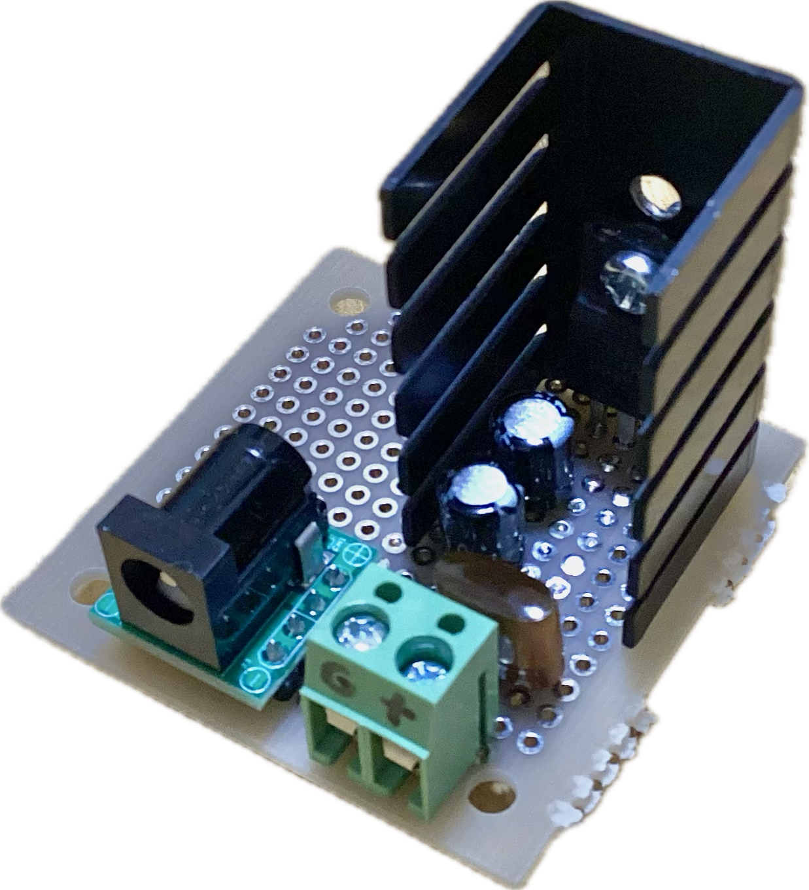
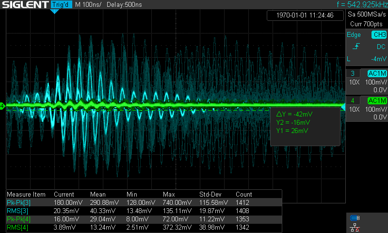
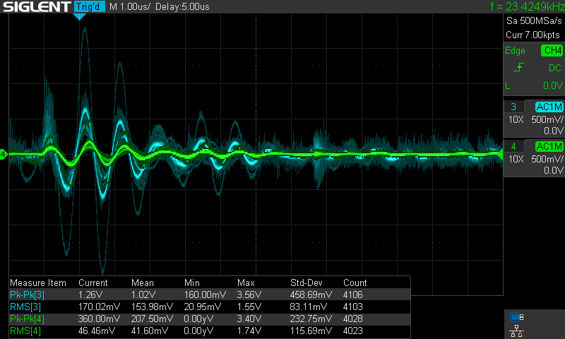

なんやかんやで部品もオシロスコープも手元にある状態なので作っていきます．
今回作るのは5 V出力の低ノイズな電源ユニットです．
入力はDCジャック(5.5 mm φ 2.1 mm)，出力は0.2 inピッチターミナルです．
3端子レギュレータはNJM7805FAなので，放熱器に放熱シートも不要です．
またレギュレータの電圧降下分とノイズリプルを考慮して，入力は7 Vから30 V程度です．
回路の流れとしては，入力を電解コンデンサでデカップリングし，それをレギュレータに入力してフィルムキャパシタやセラミックキャパシタの類のものでさらにでカップリングします．
キャパシタはそこら辺に転がっていたものを使っているので，正直特性は知りません．
ただ入力用のものは16 V耐圧の導電性高分子アルミ固体電解コンデンサーの220 uFを2直列にして用いています．
ですから32 V耐圧品として利用できます．
ただし2直列ということは要領も半減しているので注意が必要です．
本当は30 強の耐圧で合計1000 uF程度にしたかったですが基板のサイズが足りません．
取り回しのいい45基板に収めたいので我慢します．
ということで，組み立てました．

非常に簡素な構成です．
これでも動きます．
せっかくオシロスコープがあるのでノイズも見てみましょう．
12 VのACアダプタを接続した場合の波形です．
共立電子産業のアダプタで，個人的に気に入って使っているものです．

まぁまぁ優秀ですね．
定常時500 mVPKPKの入力ですが，約20 mVPKPKで4 mVRMSという低ノイズさを実現できています．
実際に使用する環境はこれになると思いますので，まぁいい感じだと思います．
次に電源としてノイジーな安定化電源を接続します．
SPE6103という電源で，ワイドレンジタイプで何かと便利なので使っていますが，非常にノイジーです．
先ほどと同じく12 V設定で入力しています．
先ほどとはオシロスコープの垂直レンジが違っているので見方にはご注意ください．
先ほどは100 mV/divでしたが，次の画像は500 mV/divになっています．

定常時1.5 VPKPK，最大で約3.5 VPKPKという脅威のリップル性能をもつ電源です．
こんな電源から360 mVPKPK，46 mVRMSの電源を取り出せているのですから，案外いいかもですね．
元の入力が170 mVRMSなので，かなりノイズレベルを低減できています．
ということで今回は軽く電源ユニットを作ってきましたが案外性能は良さそうです．
やはり3端子レギュレータは手軽なのに低ノイズでいいですね．
1.5 Aは引き出せるので十分だと思います．
これからの検証に使っていこうと思います．